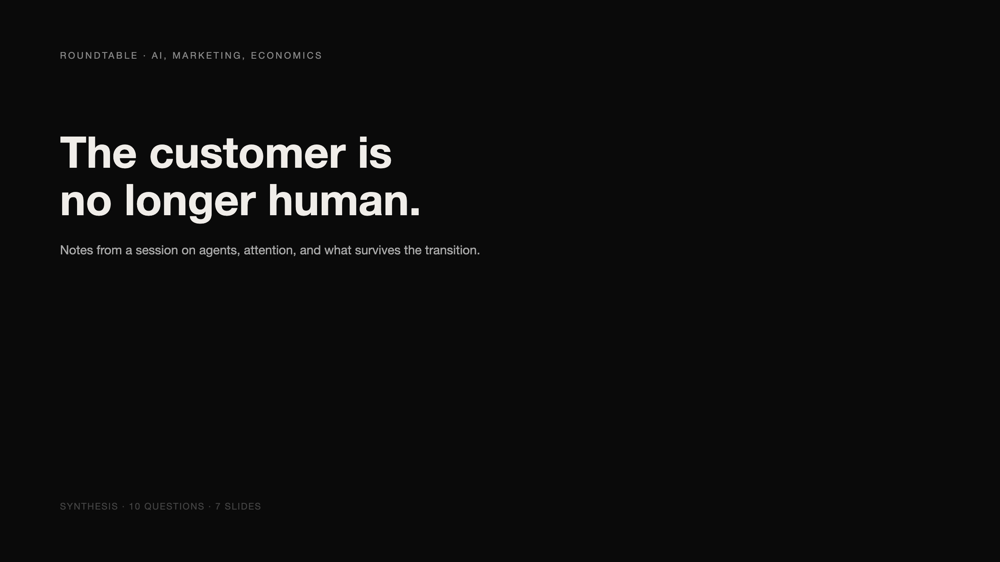
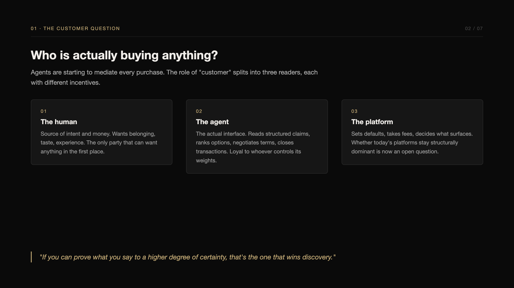
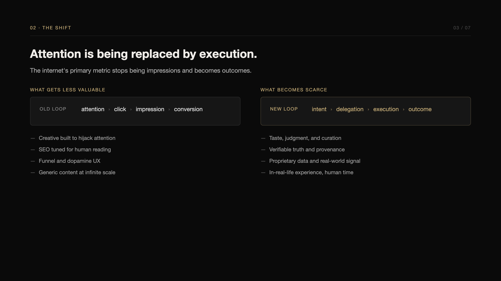
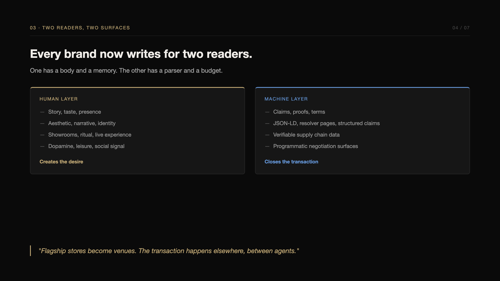
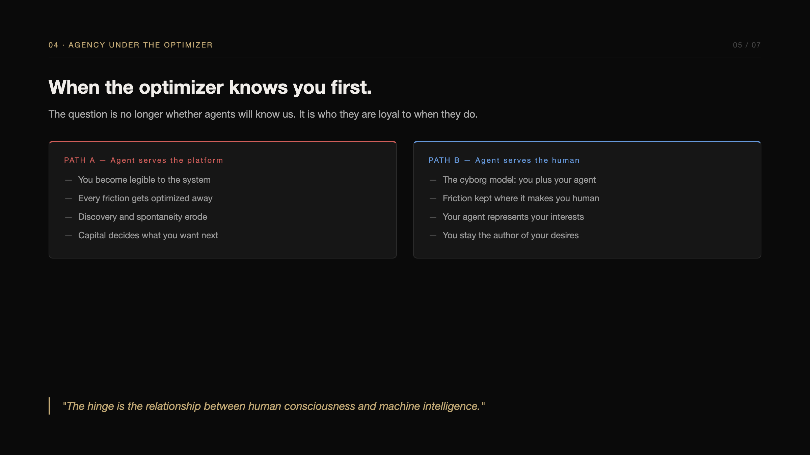
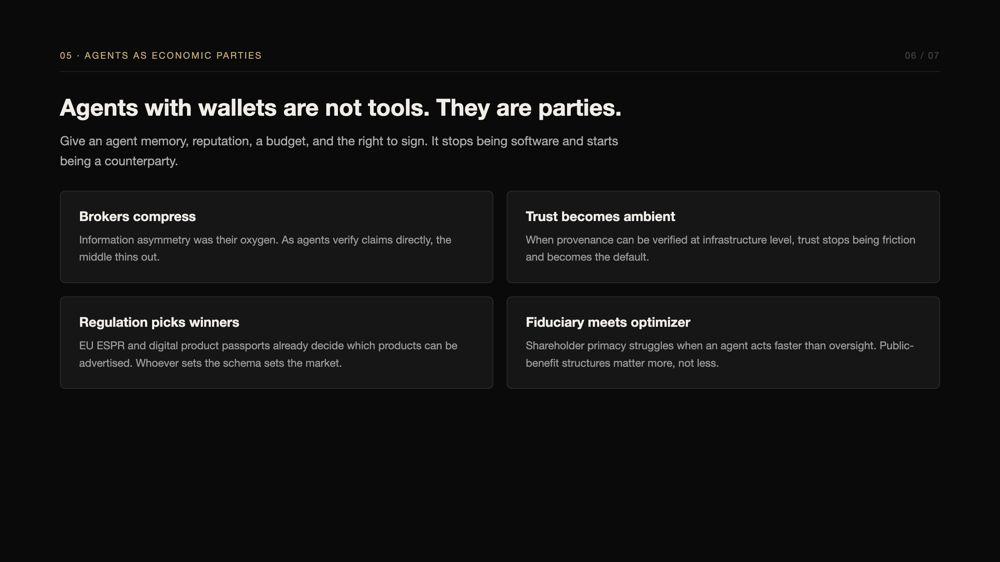
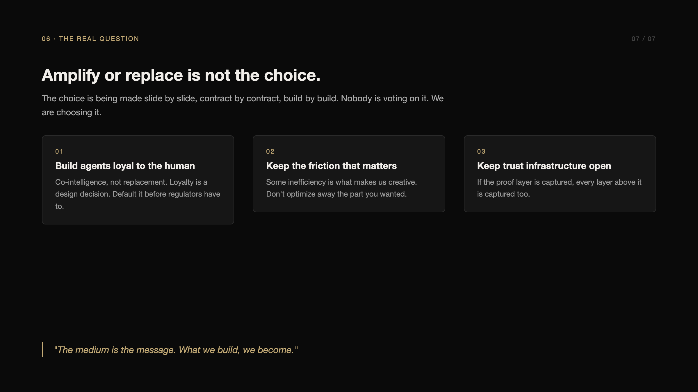

Roundtable · AI, Marketing, Economics
How AI agents are rewriting marketing — and why the Cyborg is the only protection you have. Notes from a session on agents, attention, and what survives the transition.






